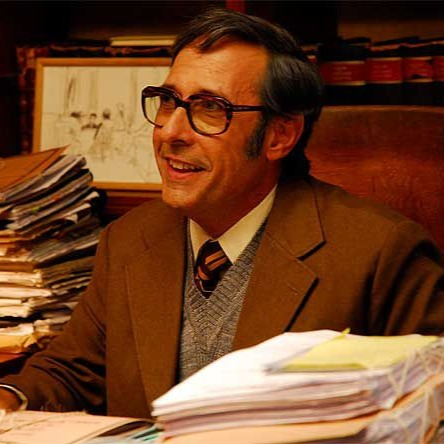
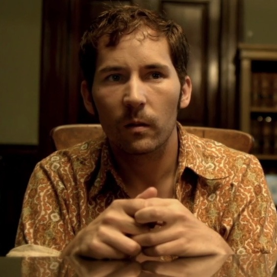

Ricardo Darín
Personaje: Benjamín Espósito

Ricardo Darín interpreta a Benjamín Espósito, un secretario judicial retirado
que decide escribir una novela basada en un caso de homicidio ocurrido en 1974.
Su personaje representa la búsqueda de justicia y la lucha contra el olvido.
Soledad Villamil
Personaje: Irene Menéndez Hastings

Soledad Villamil encarna a Irene, una abogada y jefa de Espósito en el tribunal.
Su personaje aporta inteligencia, firmeza y un trasfondo romántico con Espósito,
que atraviesa toda la trama de la película.
Guillermo Francella
Personaje: Pablo Sandoval

Guillermo Francella interpreta a Pablo Sandoval, el mejor amigo y colega de Espósito.
Con su humor y humanidad, equilibra la dureza de la historia, pero también muestra
la vulnerabilidad de un hombre atrapado por el alcohol y la injusticia.
Pablo Rago
Personaje: Ricardo Morales

Pablo Rago interpreta a Ricardo Morales, el esposo de la víctima del crimen.
Su vida queda marcada por el dolor y la obsesión por encontrar justicia, siendo
una figura clave en el desarrollo del caso y el desenlace de la película.
Javier Godino
Personaje: Isidoro Gómez

Javier Godino encarna a Isidoro Gómez, el principal sospechoso del asesinato.
Su personaje genera tensión e incomodidad, representando la impunidad y la violencia
de una época marcada por la corrupción y el abuso de poder.
Mario Alarcón
Personaje: Fortuna Lacalle

Mario Alarcón interpreta al juez Fortuna Lacalle, el superior de Espósito en el juzgado.
Su personaje simboliza la burocracia y la indiferencia del sistema judicial, mostrando más interés en mantener las formas que en buscar la verdad, lo que dificulta el avance del caso.